💴 CFD戦略ブリーフ — 8/31週
対象週: 2026-8-28_wk04（データ期間 2026-08-24→08-28 / snapshot 2026-08-30） ｜ ソース: review・meta・snapshot・boss(wr-2026-8-28 本体8/28 ＋ Rex追記 8/29)・週末終値チャート11枚（★JP2Y・JP10Y を含む）・口座3枚・--trade --news・X実データ ｜ CFD: 残 1.0 Lot（加重平均 4,404.50）で確定
★★ 本週の特例（Boss指示 2026-08-30）: 米金利は添付の終値チャートとレポート記載内容が1次情報。Yahoo の 8/28 欠測により機械の金利4本は 8/27＝ウォーシュ講演の前で、本週の最大イベントを1本も織り込んでいない。
Regime: Gold Bid（vol=normal / oil=range / gold=bid / crypto=strong）
Add risk gate: 開放（VIX 14.51<18）
Reduce: caution
介入 coord_stage: executed / IMF残弾 0（据置）
★機械 equities / jp_rs は NaN汚染で読まない
★★ 今週の骨格 — 8/28 ウォーシュ議長のジャクソンホール講演がタカ派で、それが週のすべてを決めた。
「基調的なインフレが目標に向かって明確かつ十分な速さで進んでいると確信できなければ、まだやるべき仕事がある」
「65ヶ月続く高インフレの責任は中銀自身にある」。★PCE構成199品目のうち 54% が前年比3%超（コロナ前平均は32%程度）という内訳も提示。
→ 9月利上げ確率は CME FedWatch で前日の約35% から 57〜60% へ急上昇し、市場は典型的な 「ベアフラットニング＋ドル高・逆金融相場」で反応した。
★ 効き方には時間差があった（Boss）——速報段階では金 -1.7%・4,526ドル程度と報じられたが、
NY引けにかけてさらに売りが加速し 4,454.26 まで沈んだ——表示されている支持線ちょうどで止まった。
★★ 金利レジームが完全に反転した。8/7 に登録した「ブルスティープ転換点」は3週間で無効化された。
US2Y 4.215→4.360%（+14.5bp）／US10Y 4.736→4.730%（-0.6bp）／US30Y 5.256→5.213%（-4.3bp）
＝ ★短期だけが上がり、長期はむしろ下がった。
2s10s 52.1→37.0bp（-15.1bp）／10s30s 52.0→48.3bp（-3.7bp）／2s30s 104.1→85.3bp（-18.8bp）。
★ US30Y がほぼ横ばいだったことが「タカ派だが将来のインフレ抑制期待も同時に織り込まれた」という市場の解釈を示している（Boss）。
⚠️ ★ ただし「ブルスティープは誤りだった」と 8/7〜8/21 の記録を遡って書き換えない。その期間は実際にその形だった。
新しい日付の追記として「レジームが再反転した」と記録する（Rex§A の明示指示）。
★ 本アーカイブ初の日本国債実測。 Boss が JP2Y / JP10Y のチャートを初めて添付した。
JP2Y 1.700%（+0.77%・サイクル高値圏を継続）／ JP10Y 2.919%（+0.93%・高値圏更新継続）。
★ ウォーシュ発言というより前日 8/27 の日銀 氷見野副総裁発言（9月利上げに含みを持たせつつ明言回避）を受けた動き。
★ 機械側は 2026-08-09 に JP10Y: ^TNX / JP2Y: ^FVX（＝日本のラベルで米国の値を返していた）を削除して「未取得」として空けている。
→ 今週から Boss 実測がその空欄を埋める1次データとして入る（機械とは別レイヤー・統合しない）。
★ 日米とも金利上昇だが、前線（短期）の上昇幅は米国の方が大きく、金利差拡大観測が勝ってドル円が上放れた（Boss）。
1. 11ペア スナップショット（wk03 → wk04）
| 銘柄 | 最新（機械） | 30日% | wk03→wk04 |
|---|
| XAU/USD 8/28 | 4,478.100 / Boss 4,454.26 | +10.59% | -146.0 (-3.16%) |
| BTC/USD ⚠️週末値 | 80,257.539 | +27.77% | +1,922 |
| WTI 8/28 | 83.400 / Boss 84.059 | -1.50% | -3.66 (-4.20%) |
| US100 8/28 | nan / Boss 29,453.4 | nan | ★取得失敗 |
| JP225 8/28 | 66,131.977 / Boss 65,821 | +2.75% | +115.6 |
| USD/JPY 8/28 | 160.038 / Boss 160.079 | -0.09% | +1.098 ★160円台 |
| US10Y ★8/27 | 4.672 / Boss 4.730（8/28） | -1.54% | -0.066 ★講演前 |
| US30Y ★8/27 | 5.191 / Boss 5.213（8/28） | -1.59% | -0.085 ★講演前 |
| US5Y ★8/27 | 4.396 | -1.43% | -0.028 |
| US3M ★8/27 | 3.678 | -0.11% | -0.032 ★政策金利に貼付 |
| US2Y (Boss実測のみ) | 4.360 | 週間 ★+14.5bp | ★機械に存在しない |
| VIX 8/28 | 14.510 | -9.26% | -0.620 18割れ継続 |
Boss実測（8/28終値・機械snapshot外）: DXY 99.677（+0.55%／週間 +0.89%）（始値99.114 高値99.726 安値99.098） ／ EURUSD 1.15781（-0.63%） ／ XAUUSD 4,454.26（-3.21%／週間 -3.27%）・高値 4,631.87 ／ SP500 7,709.18（-0.3%／週間 +0.5%）・ナス総合 26,402.42（-0.5%／週間 +0.9%） ／ JP2Y 1.700% / JP10Y 2.919%
⚠️ XAU は GC=F 先物で Boss の現物とは既知の乖離。BTC は24/7で動くため週末値。⚠️ 金利4本は wk03=8/21 → wk04=8/27 の比較で、他ペア（8/21→8/28）と窓が揃っていない。
11ペア30日 正規化プロット（snapshot 2026-08-30）
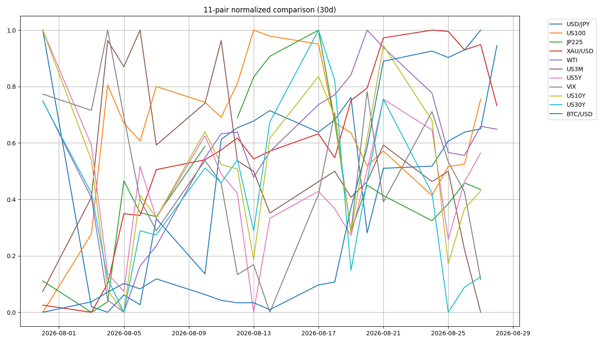
2. ★★ 本週最大の技術的論点 — snapshot の日付がペアごとに割れ、NaN が誤ったラベルに化けた
① 日付がペアごとに割れていた
| ペア | 実日付 | 状態 |
|---|
| XAU/USDJPY/JP225/WTI/VIX/BTC | 8/28 | 正常（BTCは週末値） |
| US3M / US5Y / US10Y / US30Y | ★8/27 | 8/28の行が存在しない |
| US100（^GSPC・^IXIC も同様） | — | ★8/28の行はあるが値が NaN |
★★ 機械の金利・カーブはすべてウォーシュ講演（8/28 23:00 JST）の【前】の姿で、本週の最大イベントを1本も織り込んでいない。
→ Boss指示により、米金利は添付チャート＋レポート記載を1次情報として判断する。
機械の yields=falling / shape=stable / shape_3m10s=bull_flattening / 各スプレッドとΔは日付注記付きの副次記録として残すだけ。
★ FRED は 8/28 まで出ているのに Yahoo の金利は 8/27 まで——同じ snapshot 内で日付が逆転している。
inflation_compensation にだけ as_of があり、Yahoo ペアには per-pair の as_of が無いのが今回露出した弱点 → 要Boss判断。
② NaN が「欠損」ではなく【誤ったラベル】に化けた
| 出力 | 値 | 実態 |
|---|
regime.equities | flat | ★NaN の産物 |
relative_strength.verdict | mixed | ★同じくNaNの産物 |
_equities_regime() は ch_us100 is None のみ unknown を返し、NaN は比較が全て False で最後の return "flat" に落ちる。_relative_strength() も us100_30d / nominal / fx_adj がいずれも nan で else 分岐に落ちた。
→ ★ settings.py 冒頭の「欠損は気づかれるが、間違った値は気づかれない」の実例。本週は両ラベルとも読まない。
★★ 【Boss訂正 2026-08-29】これは上の2関数だけの問題ではない。
NaN は比較演算がすべて False になるため、「分岐を全部すり抜けて最後の return に落ちる」構造を持つ判定関数はすべて同じ穴を持つ。
今週たまたま露見したのがこの2つだっただけで、個別に if を足すのは対症療法。
→ ★ 監査範囲は「末尾に無条件 return を持つ判定関数の全て」（_*_regime() 系 / _curve_spreads() / _inflation_compensation() / _relative_strength() / _intervention_watch() 等を悉皆で洗う）。
→ ★ 是正は「各判定関数に NaN を食わせて unknown が返ることを確認するテストを1本書く」。テストが穴の一覧を出す形にする。 → 要Boss判断
3. ★★ 機械 bull_flattening vs Boss ベアフラットニング — front の選び方の差ではない
| front | front の週変化 | 10Y の週変化 | ラベル |
|---|
| 機械 | US3M | -3.2bp | -6.6bp | bull_flattening
(8/21→8/27) |
| Boss | US2Y | ★+14.5bp | -0.6bp | ベアフラットニング
(8/21→8/28) |
計算はそれぞれ内部的に正しい。だが「front に何を使うかの差で、どちらも妥当」で終わらせてはいけない。
★ yields=falling も同型——_yields_regime() は US5Y と US10Y の30日変化率の平均符号でしか判定しておらず、2Y の +14.5bp を見ていない。
★★ 【Boss訂正 2026-08-29】3M は政策金利そのものに貼り付いており、利上げ確率の織り込みという情報を構造的に持たない。
FF金利が実際に動くまで 3M はほとんど動かないので、利上げ観測でフロントが売られる局面では、3M は必ず「動かない側」に回る。
→ ★★ 結果、機械はこの種の局面で必ず bull_flattening を出し続ける。今週たまたま逆になったのではなく、指標設計に由来する系統的バイアスであり、指標の側の問題。
| 是正案 | 内容 | 代償 |
|---|
| A | front を 2Y に替える
3m10s → 2s10s | ★Yahoo に2年債指数がなく FRED DGS2 の別フィードが要る。2026-06-27 に主ゲージを 3m10s にした経緯の再検討も要る |
| B | 両方持ち、3M系ラベルに用途制限を明記
「政策期待の判断には使えない」と機械側の出力に注記 | 判断のたびに人間が読み替える運用負荷が残る |
→ ★ 2026-06-27 の年輪（「proxy はその満期がその質問に答えられる位置にあるか」）の同型の再発だが一段深い——当時は「代理が届かない」、今回は「代理が特定の局面で必ず一方向に誤る」。年輪への追記候補。
4. レジーム & ゲート状況
機械レジーム
Gold Bid
equities=flat（★NaNの産物・読まない） / vol=normal / oil=range / gold=bid / crypto=strong / yields=falling（★8/27・Boss は「ベアフラット」）
Add risk ゲート
開放
VIX 15.13 → 14.51 < 18。★ただし骨格はベアフラット＋ドル高の逆金融相場で、無理に順張りしない
Reduce risk ゲート
caution
US2Y 4.360 維持/上抜け / US10Y 4.745 突破 / Gold 4,454.26 → 4,452 → 4,400 / US100 29,466 / JP225 65,634-65,684 / USDJPY 160.50-160.55 / WTI 82.749 / EURUSD 1.15749
為替介入 watch
coord_stage executed ／ imf_ammo 0 ／ zone=calm（160.038 < watch_zone 161.0）＝据置
⚠️ ★ Boss は 160.50〜160.55 を「口先介入リスクゾーン」としており、機械の watch_zone 161.0 より低い。機械が calm を出していても、Boss の警戒線までは 0.42〜0.47 円しかない。 → watch_zone を合わせるか要Boss判断
★ US2Y ピークアウト宣言 — 本週次で撤回
ピークアウト判定の閾値（8/4設定）4.154%
8/28終値4.360%
超過幅★+20.6bp
無効化条件「割った上昇チャネル下限＝日足 4.230 圏を日足実体で回復したら撤回」は 2026-08-22 に提案（wr-2026-8-21.md §E）→ 2026-08-23 に Boss 承認を得て正式登録。→ ★★当週に完全に達成された。
★ 教訓の実証: 「宣言を出すときは同時に無効化条件を書く」——置いていたからこそ今週きれいに撤回できた。
5. シナリオ（★主要リスクごとに反対方向の分岐を明示）
| 項目 | 悪化側 | 改善側 |
|---|
| 米金利 | US2Y 4.360 維持・上抜け＝タカ派継続 → 株安・ドル高。US10Y 4.745 突破なら一段高 | US2Y が維持できず反落＝織り込み過剰。US10Y は 4.4〜4.75 のレンジ継続 |
| ゴールド | 4,454.26 割れ → 4,410.15 → 4,330台の MA密集ゾーン | 4,519.97 → 4,660.71 を回復。★ただし 4,660.71 は当週跳ね返された線（n=2） |
| 米国株 | 29,466 を終値で明確に割る → 29,320 方向。9月はAIデータセンター計画の遅延・中止懸念 | 29,644〜29,935 の抵抗帯を回復すれば上値の重さが解ける |
| 日本株 | 65,634〜65,684 を終値で割る → 60,488 方向。★米金利上昇・ドル高で逆風材料が増えた | 節目を守り切る。レンジ上限 67,385〜68,450 は重い |
| ドル円 | 160.50〜160.55 の口先介入リスクゾーンに入る／159.620・159.0 割れで反転 | 160.079 → 160.508 の壁を上抜け。金利差拡大観測が続く限り上方向 |
| EURUSD | 1.15749（日足MA付近）を明確に割る → 下値余地拡大 | 1.16687〜1.16602 を回復できるかが戻りの目安 |
| WTI | 82.749〜82.895 を下限割れ | 86.167 上限を上抜け。★制裁拡大と通航量回復が同時進行 |
| BTC | 75,200〜78,000 帯で下げ止まらない | この帯で下げ止まれば量子耐性という中期材料が効く分岐点 |
| 日本金利 | JP2Y 1.700 / JP10Y 2.919 の上昇継続 → 9/18 日銀利上げ → 円高転換 | 上昇一服。★X側は9月利上げ確率80〜90%（未検証）で Boss の「明言回避＝ハト派寄り」と読みが割れる |
6. CFD 銘柄別アクションプラン
XAU/USD（CFDゴールド） 残 1.0 Lot @4,404.50
週末終値4,454.26（-3.21% / -147.69）
週中高値4,673.78 （レグ +382.78）
週末レグ+163.26 pt·Lot （★-219.52 を返した）
含み+49.76 pt·Lot （E1残 +53.13 / ★E2残 -3.37 で含み損に転落）
当週の確定トレードゼロ
★ 残玉は 1.0 Lot 継続で確定（Boss確認 2026-08-29）。「4,500水準の4H実体下抜け確定 → 半値撤退」の条件は金曜に成立していたが執行していない。週明けの発動条件は trade_results §5 に更新済み。
撤退設計: 一次 4H 4,452 実体割れ（★2026-08-23 に「4,452 固定」で確定・ratchet しない）→ 二次 日足 4,400 実体下抜け ＋ 4H TL転換（AND）。
⚠️★ 週末終値 4,454.26 は一次シグナル 4,452 のわずか 2.26pt 上——極めて近い。
★ 8/25-26 に高値 4,673.78 を付け、週足Fibo23.6（4,660.71）を上抜けて跳ね返された＝8/6 と同型で n=2。★4,660水準で弾かれること自体は決済シグナルにしない（上値で弾かれることと上昇構造が壊れることは別）。
US2Y / US10Y（金利） Boss実測が正本
US2Y4.360%（週間 +14.5bp）
US10Y4.730%（-0.6bp）
US30Y5.213%（-4.3bp）
★ US2Y は4時間足で急激な垂直上昇——9月利上げ織り込みの急上昇を直接反映。
★★ US2Y が 4.360% を維持・上抜けするかが「タカ派継続」を裏付けるバロメーター（Boss）。これが今週の単一の最重要ライン。
★ US10Y は 4.745% 突破なら一段高、失敗なら 4.4〜4.75% のレンジ継続。
⚠️ 機械は US2Y を持っていない（Yahoo に2年債指数が存在しない）。この空欄が本週の最大の動きを構造的に見えなくした（→ §3）。
US100 29,453.4
-0.40%／週間 +0.71%。★事前の分岐点 29,466 のすぐ下で着地。割れで 29,320 方向／29,644〜29,935 回復で上値の重さが解ける。★金曜だけ見ると下落だが週間では3指数ともプラス（NVIDIA決算効果）——混同しない
JP225 65,821
安値 65,634。65,634〜65,684 が生命線で割れると 60,488 方向。★米金利上昇・ドル高で逆風材料が増えた。レンジ上限 67,385〜68,450 は重い
USD/JPY 160.079
高値 160.203／週間 +0.78%。上は 160.508 の壁、★★160.50〜160.55 は口先介入リスクゾーン。下は 159.620 / 159.0。⚠️--news ④「介入効果4週間で陰り」（共同）
EUR/USD 1.15781
-0.63%。「タカ派ウォーシュ ＞ タカ派ラガルド」でドル優位。1.15749 割れで下値余地／1.16687〜1.16602 回復が戻りの目安
WTI 84.059
-0.18%／週間 -3.61%。★ウォーシュ発言の直接的インパクトは限定的。下限 82.749〜82.895／上限 86.167。⚠️制裁拡大（--news ③）と通航量の半分回復が同時進行
DXY 99.677
+0.55%／週間 +0.89%。★★8/19-20 に割り込んだ 99.430 を回復し、その上で引けた。次は 100.335、下値支持は 99.430 → 98.687
7. 金利カーブ 4点 & インフレ補償
⚠️★ 機械カーブはすべて 8/27＝講演の前。points_pct {3M 3.678, 5Y 4.396, 10Y 4.672, 30Y 5.191}。
5s10s +27.6bp（stable）／3m10s +99.4bp（bull_flattening・positive）／3m5s +71.8bp／belly_premium +23.4bp（21.3→23.4 で瘤がさらに膨らんだ・belly_elevated）／10s30s +51.9bp（Δ1w -2.2bp / Δ30d -1.1bp・narrowing）。
★ Boss 実測（8/28）のカーブが本週の正本: 2s10s 37.0bp（-15.1bp）／10s30s 48.3bp（-3.7bp）／2s30s 85.3bp（-18.8bp）。
インフレ補償（FRED・別フィード / as_of 2026-08-28）
| 水準 | Δ1w | Δ30d | direction_1w |
|---|
| 5Y BE（T5YIE） | 2.30% | -4.0bp | +6.0bp | narrowing |
| 5y5y BE（T5YIFR） | 2.32% | -2.0bp | +4.0bp | narrowing |
★ BE は週次で縮小し、近期の方が大きく縮んだ（-4.0 vs -2.0bp）。wk03 は両者とも widening だったので方向が反転。
★ §D（DFII5 の検定）は【判定保留】——ただし「窓が狭いだけ」は潰した。
fredgraph.csv?id=DGS5 / DFII5 / T5YIE を直接落として末尾を確認:
DGS5 は 2026-08-27 4.38、DFII5 は 2026-08-27 2.07 で終わっており、8/28 の行そのものが存在しない（値が空欄なのではない）。T5YIE だけ 8/28 = 2.30 がある。
→ ★ days 窓のドリフトではない。H.15（DGS5/DFII5）と breakeven（T5YIE）で公表タイミングが違う——Boss の第一仮説が確認された。
★★ 「算出不能」は ΔDFII5 単独についてで、ここまでは確定する:
ΔT5YIE(8/27→8/28) = 2.31 → 2.30 = -1.0bp／恒等式 T5YIE = DGS5 − DFII5（34営業日で誤差ゼロ）より ΔDFII5 = ΔDGS5 + 1.0bp ＝ 未知数は ΔDGS5 だけ。
★ 記録として（解釈は付けない）: BE は 8/28 に日次で低下した＝恒等式上「実質が名目より 1.0bp 多く上昇した」と同値。
⚠️ ただし 日次1bp は測定分解能そのもの（3系列とも小数2桁＝1bp刻み）で、年輪§8「測定分解能より細かい閾値を引いた」に該当するため方向の主張には使わない。
→ 値を見てから基準を変えないため、DGS5 の 8/28 が出てから判定する。
8. ★ 事前登録の結果 — 的中したのに何も起きなかった
| 出方 | 織り込み | 金 | 結果 |
|---|
| 弱いデータを認めてハト派 | 済み | 4,651へ | — |
| タカ派維持 | 薄い | 強く叩かれる | ★的中 |
ウォーシュはタカ派。9月利上げ確率 35%→57〜60%。金 -3.21%。
さらに「4,651.26 に JH 前に到達したら 8/6 と完全に同じ配置」という配置の認識まで再現——8/25-26 に高値 4,673.78 → 週足Fibo23.6（4,660.71）を上抜けて跳ね返され → -219.52pt。n=2。
★★ ただし事前登録に「行動」が書かれていなかったため、発火しても何も起きなかった。
→ 登録テンプレートに trigger / action / invalidation の3欄を必須化する提案（trade_results §4）→ 要Boss判断。
★ これは「確率は低いが損失の非対称が大きいので構えは後者に合わせる」という判断が正しかったことの実証であると同時に、正しい判断が執行につながらなかった記録でもある。
9. 週内タイムライン
- 8/24-25 週前半 — NVIDIA 決算（X側実数: 売上 約$96.2B・EPS 約$2.22 vs 予想$2.10・いずれも未突合）。週間で3指数ともプラスの原動力。
- 8/25-26 — ★金が高値 4,673.78 を付け、週足Fibo23.6（4,660.71）を上抜けて跳ね返された。事前登録の「配置」がここで再現。
- 8/27 — 日銀 氷見野副総裁の発言（9月利上げに含みを持たせつつ明言回避）→ JP2Y 1.700% / JP10Y 2.919% が高値圏を更新。
- 8/28 23:00 JST — ★★ウォーシュ議長 JH講演がタカ派。9月利上げ確率 35% → 57〜60%。全資産に波及。★効き方に時間差（速報 4,526 → NY引けにかけて 4,454.26 まで加速）。
- 8/28 — ★イラン制裁の拡大（米政権がエジプトの大手銀バンク・ミスルを制裁対象／--news ③・ロイター） ／ 円が一時 160円20銭「介入効果4週間で陰り」（--news ④・共同）。
- 8/31 月（行動週の起点） — US2Y 4.360 の維持/上抜けを最初に見る。金は 4,454.26 と一次 4,452 の 2.26pt 幅で始まる。
- 9/18 想定 — 日銀利上げ。JP2Y / JP10Y の上昇継続が前提を作る。
10. 監視トリガー（毎朝チェック）
★★ US2Y 4.360%（維持/上抜け）タカ派継続＝株安・ドル高 ／ 反落＝織り込み過剰
★ US10Y 4.745%（突破）一段高 ／ 失敗なら 4.4〜4.75 のレンジ継続
★★ Gold 4,454.26（第一関門）割れ → 4,410.15 → 4,330台。一次 4,452 実体割れ（固定）→ 二次 4,400＋4H TL転換
Gold 4,519.97 / 4,660.71（戻りの壁）4,660.71 は当週跳ね返された線（n=2）
US100 29,466（終値割れ）29,320 方向 ／ 29,644〜29,935 回復で上値の重さが解ける
JP225 65,634〜65,684（生命線）割れで 60,488 方向
★★ USDJPY 160.50〜160.55（口先介入ゾーン）機械は calm（161.0）だが Boss 警戒線まで 0.42〜0.47 円
EURUSD 1.15749 / WTI 82.749 / DXY 100.335 / 99.430 / 98.687各下限・上限
BTC 75,200〜78,000この帯で下げ止まるかが分岐点
★ FRED DGS5 の 8/28出た時点で ΔDFII5 が確定し §D の判定が閉じる
11. Boss提供チャート（週末終値 / 2026-08-28 close・11枚）
XAU/USD — 4,454.26（-3.21%／週間 -3.27%）。高値4,631.87からの急落・支持線ちょうどで停止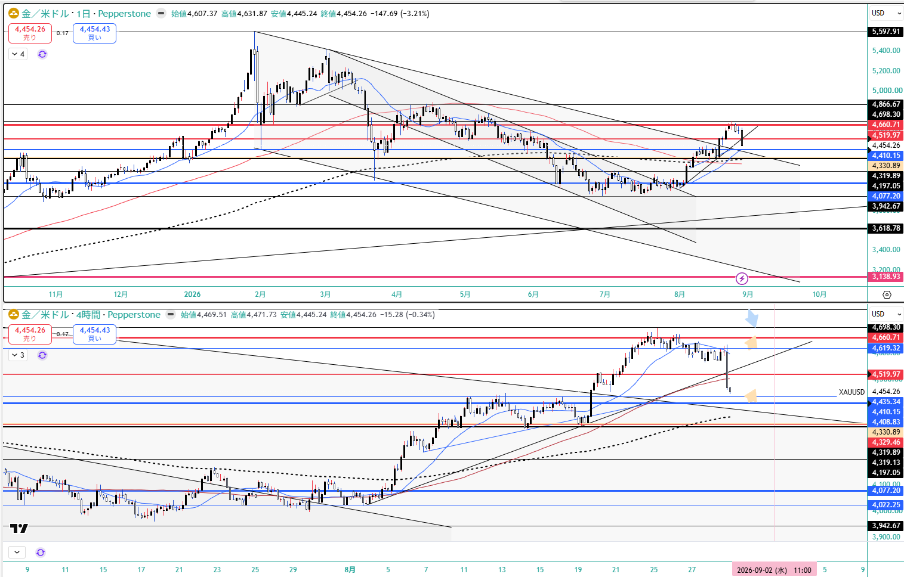
US2Y — ★4.360%（週間 +14.5bp）。4時間足で急激な垂直上昇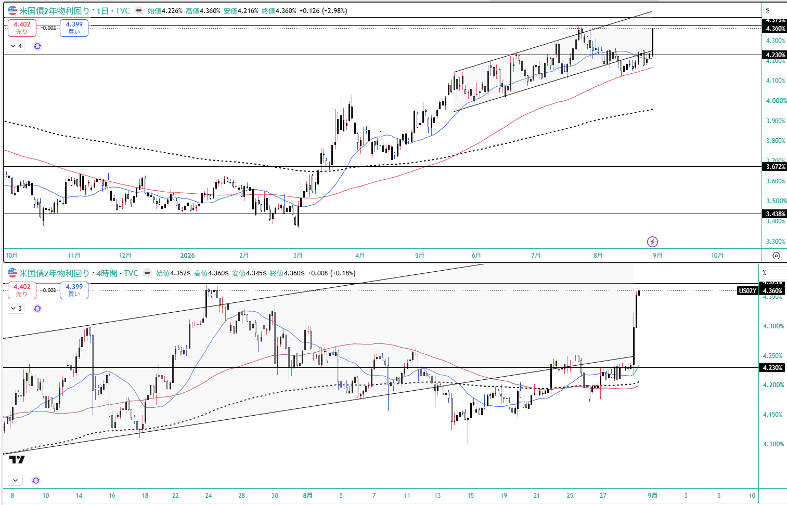
US10Y — 4.730%（-0.6bp）。★短期が上がる横で長期は下がった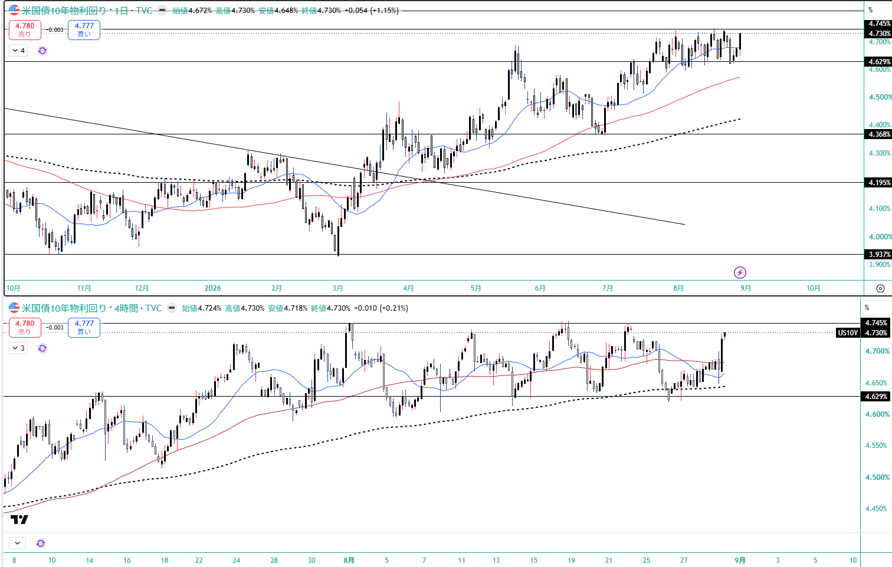
US30Y — 5.213%（-4.3bp）。★横ばい＝将来のインフレ抑制期待も同時に織り込み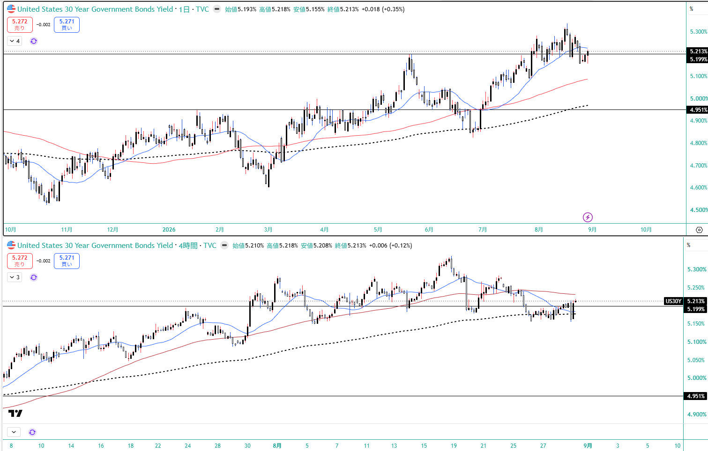
★ JP2Y — 1.700%（+0.77%）。本アーカイブ初の日本国債実測・サイクル高値圏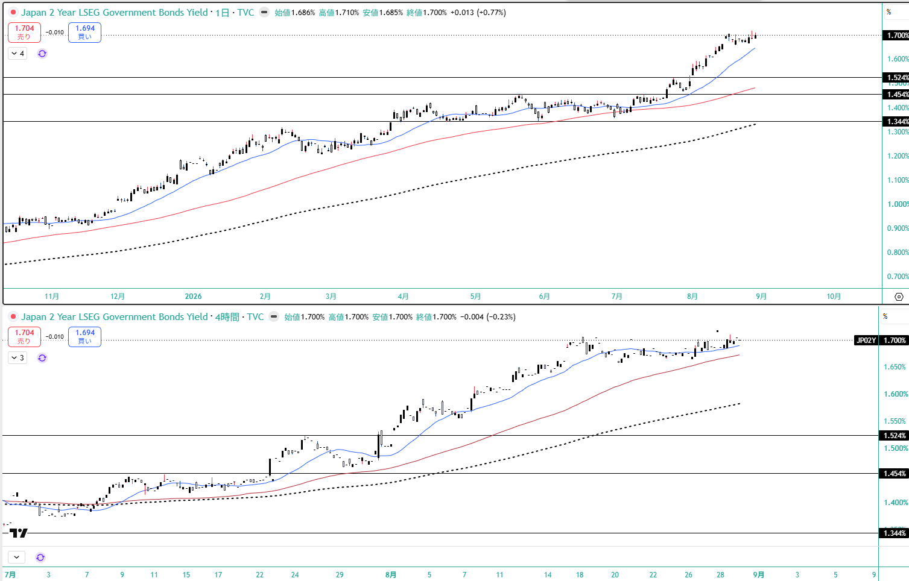
★ JP10Y — 2.919%（+0.93%）。高値圏更新継続（8/27 氷見野発言）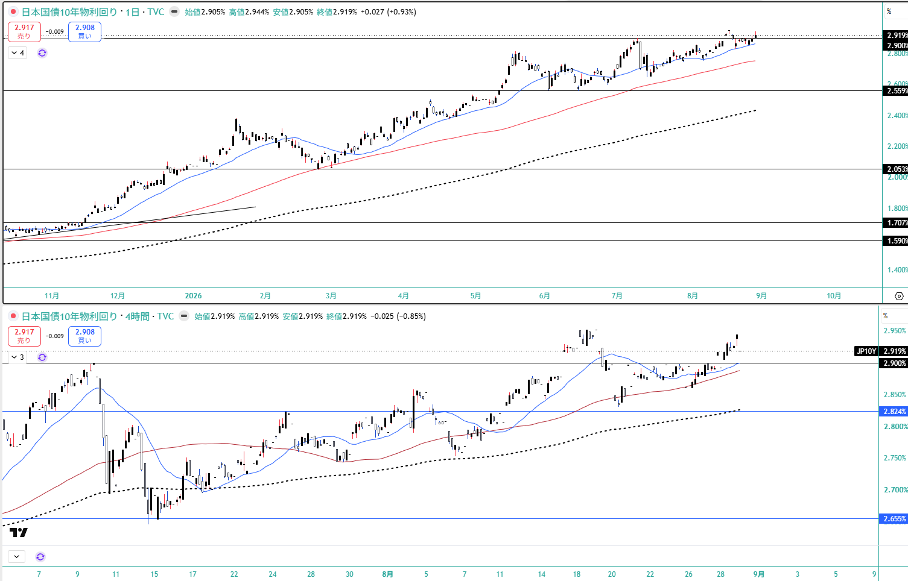
US100 — 29,453.4（-0.40%）。★事前の分岐点 29,466 のすぐ下で着地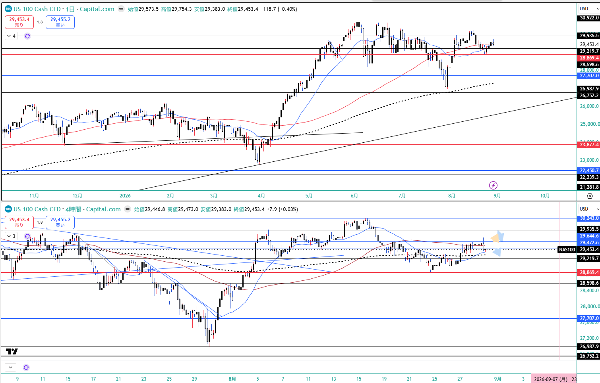
JP225 — 65,821（安値 65,634）。65,634〜65,684 が生命線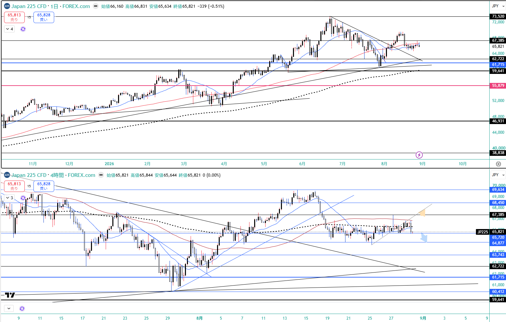
USD/JPY — 160.079（高値 160.203）。160円台に乗せて引け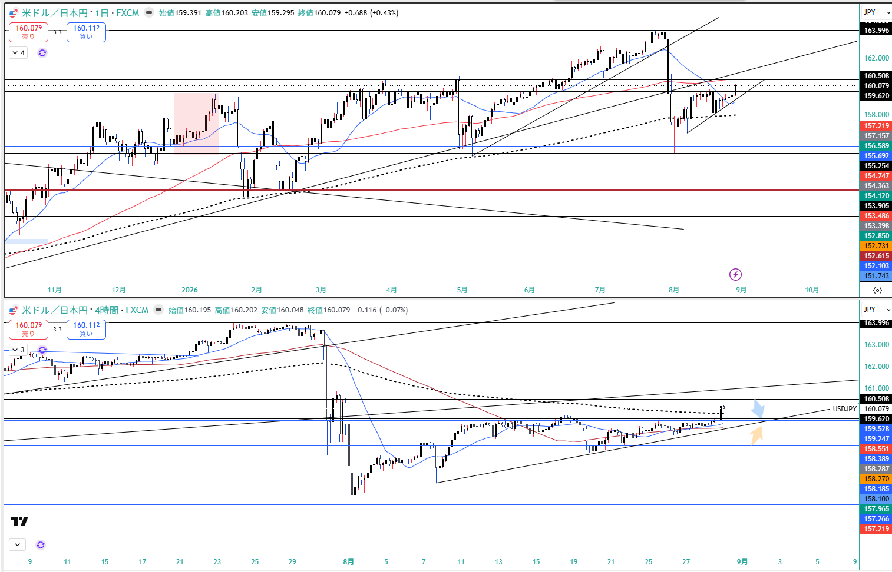
EUR/USD — 1.15781（-0.63%）。ラガルド押し目買い目線は明確に無効化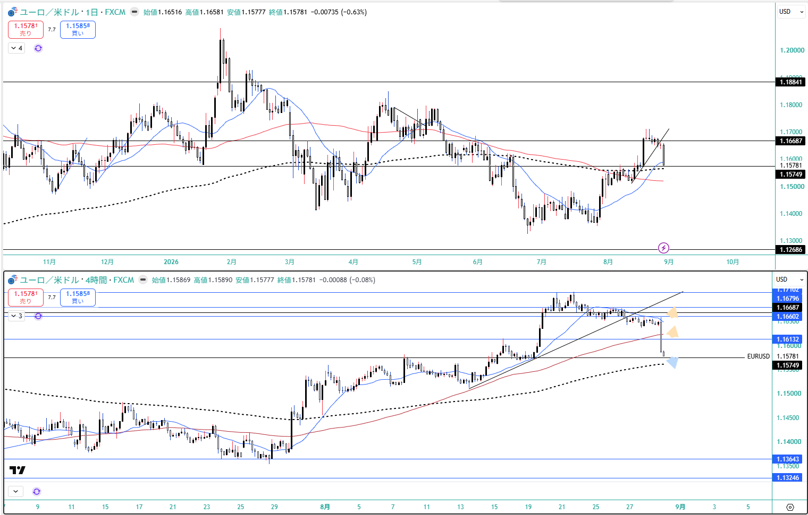
DXY — 99.677（+0.55%）。★割り込んだ 99.430 を回復してその上で引け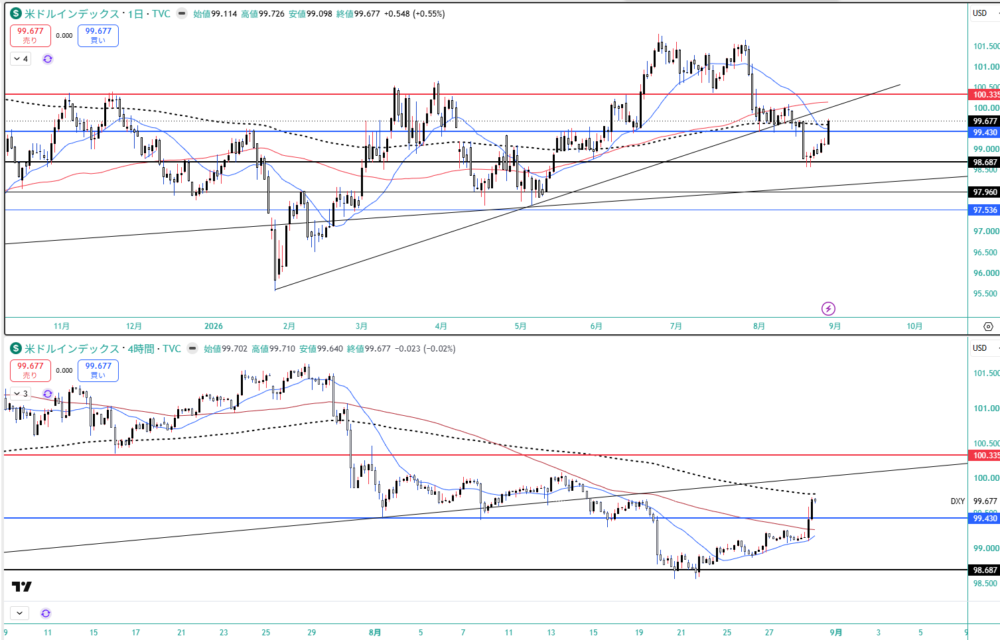
WTI — 84.059（-0.18%／週間 -3.61%）。レンジ中心に着地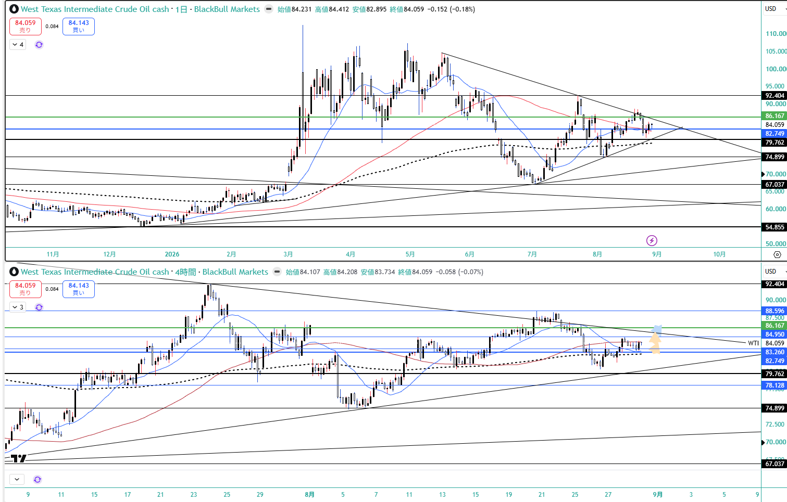
12. GMポートフォリオ（2026-08-29 16:25）
総資産
5,053,619円
wk03 5,020,238円 → +33,381円
評価損益
+450,101円 / +9.77%
wk03 +416,720円 / +9.05% → +0.72pt
買付余力
265,596円
★預り金がスィープ専用口座に一本化され、総額は不変
★ Rex追記§F は「総資産の自己ヘッジは当週は働かなかった」としている。
これは週後半（ウォーシュショック）に金と株が同方向に動いたという構成の話であって、
週全体では NVIDIA 決算効果が勝って総資産は上昇した。両方を記録する。
⚠️ ★ wk03 で書いた「JH で金が叩かれれば CFD と現物の両方に同時に逆風＝リスクは分散されていない」という配置が、そのまま実現した。
ただし 425A 特定は +20,925 でプラスを維持し、GDX も円安のおかげで円換算では小幅減に留まったため、総資産レベルでは吸収された。
国内株式(現物)4,256,011円 / +430,080円 / +11.24%
米国株式532,012円 / +20,021円 / +3.91%（外貨建 +155.26 USD / +4.88%）
国内の牽引は ★GX半導体(2243) +305,196 で単独最大（⚠️wk03 の +311,460 からは -6,264）／2638 +62,725 / 2847 +35,440 / 1655 +30,510 / 425A特定 +20,925 / 7011 +14,500 / 586A +1,980。
重しは 513A -16,500 / 6954 -15,300 / 425A NISA -6,200（再びマイナス）/ 200A -3,196。
★ 425A は特定 +20,925／NISA -6,200 で符号が分かれたまま（取得単価 363 vs 394）。
米国株は ★GDX 102.83→99.65 USD（金の急落を直撃）で USD建て +276.15→+228.45 USD（-47.70）だが、円安（158.94→160.04）が効いて円換算では +43,380→+36,587（-6,793）に留まった。
★★ SPCX が -132.08→-73.19 USD へ +58.89 USD 改善——マスク氏の「2033年までに売上高3.5兆ドル（現在の166倍）」報道でロックアップ解除への不安が後退した文脈と方向が一致。
★ 通貨: USD建て資産は総資産の約30%。ドル円 160.079 までの円安は当週は追い風。
⚠️ ただし「Boss自身の9月円高観と通貨構成が逆を向いている」構図は変わらず、2243・1655 の為替ヘッジ有無は3週連続で未確認。
★ 損出し候補（513A/6954/200A）は 8/26 -43,344 → 8/28 13:30 -24,800 → 週末 -34,996 と2日で2回前提が反転（Rex§F）。税の理屈（待つ方が有利）は成立するが、待つこと自体に価格変動リスクがあることが実測で出た。
⚠️ 本資料は 2026-8-28_wk04 の確定データ（snapshot 2026-08-30 / review / meta / Boss市況 wr-2026-8-28＝本体8/28 ＋ Rex追記 8/29 / 週末終値チャート11枚 / 口座3枚 / --trade --news / X実データ）に基づく整理であり、創作・ソース外情報は含まない。
★★ 本週の特例（Boss指示 2026-08-30）: 米金利は添付の終値チャートとレポート記載内容が1次情報。機械の金利値は 8/27＝ウォーシュ講演の前で、本週の最大イベントを1本も織り込んでいない。
★ Boss訂正（2026-08-29）を3件反映済み: ①残玉は 1.0 Lot 継続で確定——「4,500水準の4H実体下抜け確定 → 半値撤退」の条件は金曜に成立していたが執行していない（週明けの発動条件は trade_results §5）②NaN 監査の範囲は2関数ではなく「終端フォールバックを持つ判定関数の悉皆」、是正はNaN→unknown を検証するテスト1本 ③機械 bull_flattening は front の選び方の差ではなく指標設計の系統的バイアス（3M は政策期待を構造的に持たない）。
★ §D は【判定保留】だが「窓が狭いだけ」は生CSVで潰した——DGS5/DFII5 は 8/28 の行そのものが存在せず、T5YIE だけ 8/28 = 2.30 がある＝H.15 と breakeven の公表タイミング差。ΔT5YIE = -1.0bp から ΔDFII5 = ΔDGS5 + 1.0bp まで確定し、未知数は ΔDGS5 だけ。⚠️日次1bp は測定分解能そのもの（年輪§8）で方向の主張には使わない。
⚠️ XAUUSD・DXY・USDJPY・WTI・US100 は Pepperstone / TVC / BlackBull / Capital.com / FOREX.com の混在（Rex追記§H）。1本の系列に混ぜない（年輪§8(e)）。
⚠️ X上の数値は全て未突合（CME 55-59% / Kalshi 43-48% / 日銀 80-90% / 介入 15.4兆円 / NVDA $96.2B・EPS $2.22）。X の各ポストは市場参加者の解釈であり1次報道ではない。★予測市場間で10pt以上の開きがあり、単一の数字で語らない。
⚠️ 同じ氷見野発言を Boss と X が逆に読んでいる（Boss「明言回避＝ハト派寄り」／X「9月利上げ確率 80〜90%＝タカ派」）。記録のみで確定させない。★ただし「前線の上昇幅は米国の方が大きい」という結論は両者で共通なので、矛盾ではなく強調点の違い。
⚠️ 未確認の持ち越し: 2243・1655 の為替ヘッジ有無（3週連続）／SPCX の取引履歴・IONQ 消滅の経緯／5/11 に 1627（NF電力・ガス）を売却した理由／P9・P10 の登録可否と「発言日」の定義（2週連続）／per-pair の as_of を snapshot に持たせるか／intervention_watch.watch_zone（161.0）を Boss の口先介入ゾーン（160.50〜160.55）に合わせるか。
投資助言ではなく GM運用の作戦整理。最終判断はミナト。 生成: ClaudeCode / 2026-08-30。